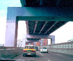

呂清夫 撰文

前一陣子，台北有十六座陸橋被刷得份紅嫩綠，用色是大膽無比，品味則粗陋不堪，弄得電視、報紙、民眾莫不交相指責。事實上，這種現象應非一日之寒，例如中正堂的白牆藍瓦之前，竟會冒出兩座橘紅色的大型歌劇院及音樂廳，形成刺眼的對比，甚至令人感到「忽冷忽熱」。又如新建的市議會之中，地毯陳設一律紅色系梳，據說因此引起了﹁鬥牛場效應﹂，難怪議員吵架無日無之。其實，十月慶典之間，街頭巷尾、機關學校還不是到處布置得「紅塵滾滾」，令人脈搏加快，台北交通之亂、民眾脾氣之躁，難道與此無關？只不知十月來台的外賓作何感想？但願不要來個利瑪竇，因為當年他曾批評漢人的工藝粗陋不堪，遠不如西方的精雕細琢，一時叫我們很不服氣。不僅台北的新建築如此刺眼，古蹟也常被改得十分奇怪，城門寺廟固然改得花花綠綠，金光閃閃。市區公園更是每下愈況，圓山兒童樂園本是台灣最古老的公園之一，當初即設有遊樂區、動物園，而在入口不遠的山坡下本有一個「水濂洞」，當年在貝塚、山壁環抱之下，水聲淙淙，這個地方一定極有可觀。可是現在已經無水無洞，「水濂洞」三個石上刻字已有半個字被埋在水泥之中，宛如生物遭到活埋一般，水泥又是隨便糊一糊，把過去的水塘埋掉就算，套句現在的流行話應是：「親愛的，我把水濂洞變成水泥洞了！」也不知是誰的主意？兒童樂園中還有一個很大的銅像基座，基座本身有模有樣四周還有階梯，然而就是銅像不見了，只見圓形基座的中央，用水泥填平了，但還可以看出填平的部分是方形，也是隨便糊糊，好像精緻的衣服上補一塊破布，十分礙眼。事實上，在一個公園內，水池、壁泉、噴泉、雕像都和花木一樣，是很重要的添景設施，而且，從中亦可看出一個社會的品味水準，但是我們似乎很不重視，偶一為之，也是很不搭調。不久前，台北都在換裝按鍵電話，但是電信局來裝的電話實在令人失望。一個朋友說，電信局來人只帶一個紅色、一個黑色電話，並說全台北都一樣，只此兩種，別無選擇，但朋友家�堸劓黎ˇA合這兩個顏色。就形狀而言，朋友說，閉著眼睛到地攤上隨便抓一個都比它好看，朋友一氣之下，乾脆抱殘守缺，不換電話。不過，最近似有改進，電信局來人之前，會先來電問問喜歡什麼顏色，筆者也接獲通知，我並指定淺綠色。可是等到來人以後，其帶來的電話卻是深綠色，那是阿兵哥身上穿的顏色，來人還把裝電話的盒子給我看，上面確實打著「淺綠色」字樣，並說電信局指的淺綠色只有這種而已，我一時真有點糊塗，難道我們是有點文盲？還是有點色盲？阿兵哥穿的衣服是淺綠色的嗎？不過，馬莎葛蘭姆率團在台北演出之際，突然燈控電腦當機，一片璀璨光景頓時化為烏有，天文數字的文建經費付之流水，於是觀眾叫屈，商人喊冤，教育部控告，國際間傳笑。無獨有偶的，近日台北社教館又演出一場熄燈秀，敦化國小的兒童在館中演出國樂，演到半途，突然被館方熄燈，學童驚慌之餘，頓時哭成一團。人為熄燈的原因是超過比賽時間，為求競爭公平能如聯考一般，逾時即予熄燈，鐵面無私云云。本來是一件高高興興的事情，最後都弄到不歡而散，事實上，藝術競賽和聯考不能相比，大畫未必美於小畫，長詩未必優於絕句，同樣的，演奏時間較長未必如聯考那樣更有利，反而更有機率露出破綻。超過時間大可以扣分了事，關燈懲罰，未免有點野蠻，甚至有違社會教育。我想主其事者如對音樂有點興趣，當會愛屋及烏，不致那麼「公事公辦」了。事實上比賽辦法也是人訂的，由愛樂者來訂定，必有不同的氣象。問題是我們的愛樂者、愛畫者不多，美育云爾，敷衍兩句而已，我們或許因為很少有過美的經驗，所以感覺不出美的好處，甚至身處髒亂亦習以為常，事實上台北如果美得像巴黎，你將活得更有價值。最近大陸在九年國民教育計畫中，竟把「一定的審美能力」列為國教的首要目標，不知大家以為如何？
原載1991.1.8.中國時報